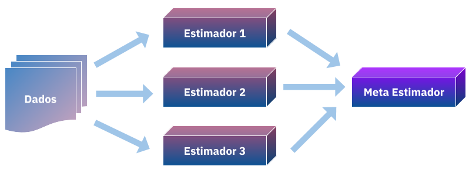

Stacked Generalization
Por ser uma tecnica relativamente nova, o “Stacked Generalization” ainda não tem uma tradução amplamente adotada, aqui proponho “empilhamento”, tradução literal para seu outro nome (stacking), como o termo para me referir a ela. Introduzida por Wolpert em 19921, essa tecnica de generalização consiste em combinar de formar não linear estimadores para corrigir seus vieses a um dado conjunto de treino, agregando suas capacidades para que se tenha uma melhor previsão.

Em uma postagem anterior apresentei a combinação linear de estimadores, nela ajustamos \(N\) modelos a um conjunto de dados \(D\) e a priori definimos pesos \(W\) para eles combinando em um somatório:
given a priori W = (w1, w2, ...wN) and∑W = 1
$$\sum_{i=1}^{N} w_{i}M_{i}$$
com isso a media ponderada das predições no geral vão ser menos enviesadas para certas regiões e podem generalizar mais, porém este metodo apresenta duas limitações, os pesos não podem ser alterados depois de verificar o desempenho (se não estariamos agindo como um meta-estimador em cima dos dados de teste) e é uma combinação extremamente simples, não aproveitando bem os pontos fortes dos estimadores \(M\) para certas regiões.
Wolpert então propõe uma alternativa a isso, e se tornasemos os pesos \(W\) em um problema de aprendizado? ou melhor, não só aprendessemos como combinar nossas predições mas também as combinassemos de forma não-linear usando um meta-estimador?
Meta-estimadores são aqueles que usam modelos base para combina-los ou seleciona-los para melhorar em uma metrica de desempenho, por exemplo você leitor quando decide entre usar uma random-forest ou uma regressão logistica para prever o seu modelo você está sendo um meta-estimador. Porém aqui surge o problema de generalização, se continuar melhorando sua regressão ou rforest você poderá acabar dando overfitting aos dados e não conseguindo generalizar, aqui então é necessário aplicar tecnicas de validação cruzada para selecionar o modelo, o mesmo ocorrerá para o empilhamento.
Para o empilhamento é ideal que o dataset seja relativamente grande, o conselho do autor é pelo menos mil registros. Começamos nosso exemplo carregando um dataset relativamente grande, 20mil registros, esse dataset tem como atributos caracteristicas de casas da california e como valor alvo o preço dela, os dados já estão normalizados e não iremos fazer qualquer alteração nele.
from sklearn.datasets import fetch_california_housing
from sklearn.model_selection import train_test_split
import pandas as pd
dataset = fetch_california_housing()
df = pd.DataFrame(data=dataset.data, columns=dataset.feature_names)
df['Price'] = dataset.target
df.head()| MedInc | HouseAge | AveRooms | AveBedrms | Population | AveOccup | Latitude | Longitude | Price | |
|---|---|---|---|---|---|---|---|---|---|
| 0 | 8.3252 | 41.0 | 6.984127 | 1.023810 | 322.0 | 2.555556 | 37.88 | -122.23 | 4.526 |
| 1 | 8.3014 | 21.0 | 6.238137 | 0.971880 | 2401.0 | 2.109842 | 37.86 | -122.22 | 3.585 |
| 2 | 7.2574 | 52.0 | 8.288136 | 1.073446 | 496.0 | 2.802260 | 37.85 | -122.24 | 3.521 |
| 3 | 5.6431 | 52.0 | 5.817352 | 1.073059 | 558.0 | 2.547945 | 37.85 | -122.25 | 3.413 |
| 4 | 3.8462 | 52.0 | 6.281853 | 1.081081 | 565.0 | 2.181467 | 37.85 | -122.25 | 3.422 |
Aqui separamos em treino e teste de forma (pseudo)aleatorizada para no final avaliarmos o desempenho.
xtrain, xtest, ytrain, ytest = train_test_split(df.drop('Price', axis=1), df.Price, test_size=.3, random_state=42)
xtrain.head()| MedInc | HouseAge | AveRooms | AveBedrms | Population | AveOccup | Latitude | Longitude | |
|---|---|---|---|---|---|---|---|---|
| 7061 | 4.1312 | 35.0 | 5.882353 | 0.975490 | 1218.0 | 2.985294 | 33.93 | -118.02 |
| 14689 | 2.8631 | 20.0 | 4.401210 | 1.076613 | 999.0 | 2.014113 | 32.79 | -117.09 |
| 17323 | 4.2026 | 24.0 | 5.617544 | 0.989474 | 731.0 | 2.564912 | 34.59 | -120.14 |
| 10056 | 3.1094 | 14.0 | 5.869565 | 1.094203 | 302.0 | 2.188406 | 39.26 | -121.00 |
| 15750 | 3.3068 | 52.0 | 4.801205 | 1.066265 | 1526.0 | 2.298193 | 37.77 | -122.45 |
Agora carregamos a validação-cruzada especificamente a KFold, para que não “percamos” muitos dados, e os modelos que serão usados, aqui não há uma regra de dedo sobre os modelos base, fica a seu criterio, porém para o meta-estimador é usualmente aplicado boosting trees. Aqui escolhi arbitrariamente kNN e ElasticNet, mas como meta-estimador usarei o xgboost.
from sklearn.linear_model import ElasticNet
from sklearn.neighbors import KNeighborsRegressor
from sklearn.model_selection import KFold
import xgboost as xgb
en = ElasticNet()
knn = KNeighborsRegressor()
gbm = xgb.XGBRegressor(n_estimators=1000) # we will early stop to not overfitAgora se inicia a criação dos atributos empilhados, para garantir que não tenha vieses e não fiquemos com poucos dados para treinar o meta-etimador os criamos por kfolds, sendo gerados os subconjuntos treino e teste, treinamos o modelo no conjunto de treino e predizemos o valor para o conjunto de teste, da seguinte forma:
kf = KFold(20, shuffle=True)
xtrain['en'] = 0
for train_index, test_index in kf.split(xtrain):
en.fit(xtrain.iloc[train_index, :-1], ytrain.iloc[train_index])
xtrain.iloc[test_index,8] = en.predict(xtrain.iloc[test_index, :-1])Fazemos o mesmo para o outro modelo.
kf = KFold(20, shuffle=True)
xtrain['knn'] = 0
for train_index, test_index in kf.split(xtrain):
knn.fit(xtrain.iloc[train_index, :-2], ytrain.iloc[train_index])
xtrain.iloc[test_index,9] = knn.predict(xtrain.iloc[test_index, :-2])| MedInc | HouseAge | AveRooms | AveBedrms | Population | AveOccup | Latitude | Longitude | en | knn | |
|---|---|---|---|---|---|---|---|---|---|---|
| 7061 | 4.1312 | 35.0 | 5.882353 | 0.975490 | 1218.0 | 2.985294 | 33.93 | -118.02 | 2.203225 | 2.108000 |
| 14689 | 2.8631 | 20.0 | 4.401210 | 1.076613 | 999.0 | 2.014113 | 32.79 | -117.09 | 1.706363 | 1.973400 |
| 17323 | 4.2026 | 24.0 | 5.617544 | 0.989474 | 731.0 | 2.564912 | 34.59 | -120.14 | 2.091721 | 2.197800 |
| 10056 | 3.1094 | 14.0 | 5.869565 | 1.094203 | 302.0 | 2.188406 | 39.26 | -121.00 | 1.698103 | 2.160600 |
| 15750 | 3.3068 | 52.0 | 4.801205 | 1.066265 | 1526.0 | 2.298193 | 37.77 | -122.45 | 2.195922 | 2.388002 |
Agora que criamos as features vamos avaliar os modelos nos dados brutos, sem as features empilhadas para verificar seus desempenhos:
from sklearn.metrics import mean_squared_error
en.fit(xtrain.iloc[:,:-2], ytrain)
ypred_en = en.predict(xtest)
print(mean_squared_error(ytest, ypred_en))
knn.fit(xtrain.iloc[:,:-2], ytrain)
ypred_knn = knn.predict(xtest)
print(mean_squared_error(ytest, ypred_knn))0.7562926012142394 1.136942049088978
Agora criamos as features com os modelos treinados para os dados de teste:
| MedInc | HouseAge | AveRooms | AveBedrms | Population | AveOccup | Latitude | Longitude | en | knn | |
|---|---|---|---|---|---|---|---|---|---|---|
| 20046 | 1.6812 | 25.0 | 4.192201 | 1.022284 | 1392.0 | 3.877437 | 36.06 | -119.01 | 1.470084 | 1.6230 |
| 3024 | 2.5313 | 30.0 | 5.039384 | 1.193493 | 1565.0 | 2.679795 | 35.14 | -119.46 | 1.744788 | 1.0822 |
| 15663 | 3.4801 | 52.0 | 3.977155 | 1.185877 | 1310.0 | 1.360332 | 37.80 | -122.44 | 2.233643 | 2.8924 |
| 20484 | 5.7376 | 17.0 | 6.163636 | 1.020202 | 1705.0 | 3.444444 | 34.28 | -118.72 | 2.413336 | 2.2456 |
| 9814 | 3.7250 | 34.0 | 5.492991 | 1.028037 | 1063.0 | 2.483645 | 36.62 | -121.93 | 2.088660 | 1.6690 |
Com os atributos empilhados em mãos agora treinamos dois modelos, um sem utiliza-los, para efeito de comparação e outro utilizando, vamos comparar os resultados:
#Without stacked features
gbm.fit(xtrain.iloc[:,:-2], ytrain.values,
eval_set=[(xtest.iloc[:,:-2],ytest.values)],
early_stopping_rounds=10,
verbose=False)
ypred = gbm.predict(xtest.iloc[:,:-2])
print("Without stacked features", mean_squared_error(ytest, ypred))
# With stacked features
gbm.fit(xtrain, ytrain.values,
eval_set=[(xtest,ytest.values)],
early_stopping_rounds=10,
verbose=False)
ypred = gbm.predict(xtest)
print("With stacked features", mean_squared_error(ytest, ypred))Without stacked features 0.23318853095188977 With stacked features 0.22410766547017014
Nos tivemos uma melhora significativa usando atributos “empilhados”, concluindo nosso meta-estimador aprende a melhor forma de combinar as features de outros estimadores, aprendendo seus erros de generalização e como os corrigir, garantindo uma generalização muito melhor.
References
https://www.sciencedirect.com/science/article/pii/S0893608005800231↩